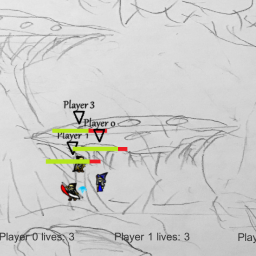

EatSafe Saskatchewan

A web application for finding health inspection records of restuarants. Coded in Scala and
utilizing the Play Framework with a backing Postgres database. Includes functionality
to modify records, view on an interactive map, and import from the old site.
Code
FBMS

The File Backup and Management System is a Java application that automatically detects changes in
a monitored folder and backs them up, using a revisioning system so that all changes are kept.
So it's essentially a local Dropbox. Most useful with networked drives.
Code
MegaGlest
I've made several additions to the RTS game MegaGlest, including adding looting, making
attack speed boostable, and allowing units to start with specific HP/EP values. I also moderate
the forums for this game, having designed its theme and extended the forums.
Code
Project site
Stick Royale

A 2D stickman fighting game with multiple character classes and stages. Adding new characters,
levels, and powerups is easy thanks to the extensible design. Can play against another
human or against AI.
Code
Fingerprint anonymizer

An experimental Chrome extension for thwarting the browser fingerprinting that the EFF's
Panopticlick identified. Utilized multiple techniques to try and make the browser as generic
(and thus non-trackable) as possible.
Code
Base converter

A simple website for converting floating point numbers into other representations, most
noteably following the IEEE 754 standard. Includes an optional subnormal feature and
educational tutorials for how the conversion works.
Code